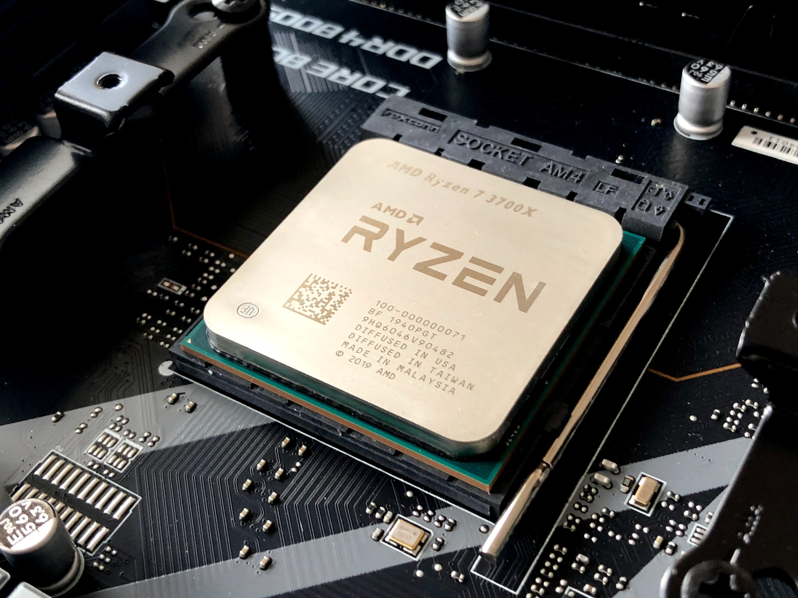

CPU
CPUs are important for running your computer. This piece of hardware is what runs non-graphical calculations for your computer. CPUs also give instructions to the other parts of your computer. Two things to keep an eye on when researching CPUs are the number of cores and the clock speed. Each core can operate separately from the others; this allows for multitasking. There is a digital way of multitasking known as threading that breaks up the physical cores into digital segments. Clock speed is the speed at which your computer can get individual tasks done.
CPU Companies
Ryzen
- AMD was founded on May 1, 1969 by Jerry Sanders.
- In 1972, the company went public and started producing computer chips.
- It is the company that designed the APUs for the PS4, Xbox One, PS4 Pro, Xbox One S, Xbox One X, Xbox Series X/S, and the PS5.